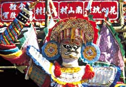

Chinese Community
Traditional Chinese religion is a rich mixture of beliefs and practices taken from thousands of years of Buddhism, Taoism, Confucianism, and folk beliefs.
Several gods may be worshipped and their favours sought by offering prayers and gifts. The God of Wealth and Good Fortune (Ts’ai Shen) and the Kitchen God (Tsao-Wang) are most often worshipped.
It is common in Chinese shops, offices and homes to find a shelf reserved for the display of images of traditional deities.
Reverence for family ancestors is common within Chinese families. It is believed that the spirits of the dead need the continuing care of the family. It is especially the duty of sons to carry out rituals on behalf of their dead parents.
The Chinese follow a lunar calendar for their festivals. The most important festival is Chinese New Year, usually occurring in January or February. This is the first day of the lunar year and festivities can last for as long as fifteen days. Each year is named after an animal — 2001 is the year of the snake. New Year is a time for cleaning, visiting friends and exchanging gifts. The Lion Dance is a special attraction and the New Year motto is ‘Longevity, Prosperity, Happiness and Harmony.’
The Dragon Boat Festival occurs in May or June. Boat races are held and dumplings are eaten. This festival commemorates a noble statesman named Ch’u Yuen. Ch’u Yuen drowned himself in 3BCE to awaken the conscience of an emperor who refused to help the poor. Ch’u Yuen’s admirers threw dumplings into the river and beat gongs to bribe or frighten sea creatures so that they would not devour his body.
Two other major festivals are the Mid Autumn Moon Festival when a procession of beautiful lanterns greets the full moon and the Ching Ming (clear and bright) Festival which reminds young people of their forefathers.
The Chinese community constitutes the largest ethnic minority group in Northern Ireland numbering about 8000 persons.
Being Chinese in Northern Ireland
Growing up in Northern Ireland as a Chinese person makes you stand out from the crowd. Even though I feel Northern Irish, some people, especially those who don't know me, treat me differently. The need to fit in can cause some young people to reject or become embarrassed by their Chinese heritage. I enjoy being different. If everyone could see themselves as equally unique then perhaps we wouldn’t have so many problems dealing with difference.
Dean Lee